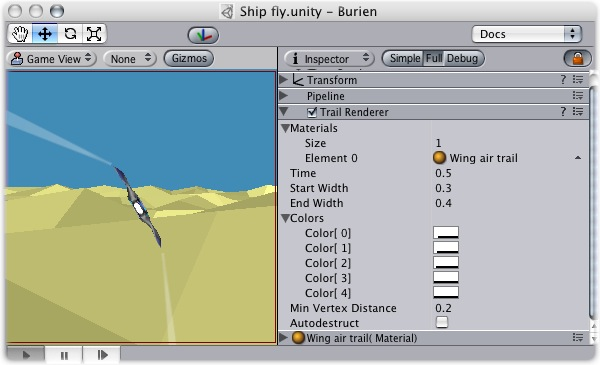
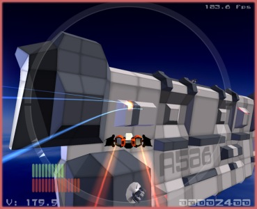

Previous
Previous
The Trail renderer is used to make trails behind objects in the scene as they move about.

The Trail Renderer
Properties
| Property: | Function: |
|---|---|
| An array of materials used for rendering the trail. Particle shaders work the best for trails. | |
| The total number of Elements in the material array | |
| Reference to the Material used to render the trail. The total number of Elements is determined by the Size property. | |
| Length of the trail, measured in seconds. | |
| Width of the trail at the object's position. | |
| Width of the trail at the end. | |
| Array of colors to use over the length of the trail. You can also set alpha transparency with the colors. | |
| The trail's initial color. | |
| The 2nd color of the trail | |
| The 3rd color of the trail | |
| The 4th color of the trail | |
| The final color of the trail | |
| The minimum distance between anchor points of the trail. | |
| Enable this to make the object be destroyed when the object has been idle for Time in seconds |
Details
The TrailRenderer is great for a trail behind a missile, or contrails from the tip of a plane's wings. It is good to add a general feeling of speed.

Practical uses of the Trail Renderer in Neil Carter's "Phoenix Final"
When using a TrailRenderer, no other filters in the Pipeline are used. It is best to create an empty GameObject, and attach a Trail Renderer as the only filter. You can then parent the Trail Renderer to whatever object you would like it to follow.
Materials
Trail Renderers should use a material that has a Particle shader. The texture used for the material should be of square dimensions (e.g. 256x256 or 512x512).
Trail Width
By setting the Trail's Start and End Width, along with the Time property, you can tune the way it is displayed and behaves. For example, you could create the wake behind a boat by setting the Start Width to 1, and the End Width to 2. These values would probably need to be fine-tuned for your game.
Trail Colors
You can cycle your trail through 5 different color/opacity combinations. Using colors could make a bright green plasma trail gradually dim down to a dull grey dissipation, or cycle through the other colors of the rainbow. If you don't want to change the color, it can be very effective to change only the opacity of each color to make your trail fade in and out at the head and/or tail.
Min Vertex Distance
The Min Vertex Distance value determines how far the object that contains the trail must travel before a segment of the trail is solidified. Low values like 0.1 will create trail segments more often, creating smoother trails. Higher values like 1.5 will create segments that are more jagged in appearance. There is a slight performance trade off when using lower values/smoother trails, so try to use the maximum value to achieve the effect you are trying to create.
Hints
- Use particle materials with the Trail Renderer.
- Trail Renderers must be laid out over a sequence of frames, they can't appear instantaneously.
- Trail Renderers rotate to display the face toward the camera, similar to other particle systems